전체 PDF · 설정·해석 · 경우별·전체 평균 CSV · 대표 step 원시 시각
모델마다 PDF 하나입니다. 각 페이지는 같은 요청의 연속 두 step이며 P1 hit / P2 hit / miss를 구분합니다. 같은 모델의 여러 설정은 같은 PDF 안에서 구분합니다.
빨간 점선: 다음 target 요청 시작(deadline 기준). 초록 원: PS cache 완성. 삼각형: draft 수신 준비. 흰 점선은 forward 횟수 표시이며 실측 개별 forward 경계가 아닙니다. 양수 여유 시간이 모두 추가 계산 예산이라는 뜻은 아닙니다.
표는 P1 hit·P2 hit·Miss·Overall(전체 평균)의 네 행입니다. 그림 위의 두 step은 실제 예시이고, 표는 해당 설정의 유효 step 전체 평균입니다. Step: 현재 target 요청 시작→다음 요청 시작. DS/PS total: 준비·정리 포함 phase 시간. DS spare*: proxy 전송 준비 완료−DS 완료(수신 도착 시점은 아님). PS spare: 다음 target 요청 시작−draft 수신 준비. 양수는 여유, 음수는 초과입니다. Graph/K1·K2는 graph 시간을 forward 횟수로 나눈 값이며 sampling·tree 선택을 포함합니다.
분류는 현재 step에서 사용한 cache 기준입니다. 전체 평균은 실제 step 수로 가중합니다. 표본이 없으면 0 대신 N/A입니다.
Proxy 계산과 target 후반 forward의 중첩 여부는 설정별로 기록에서 계산합니다. exit_proxy_side라는 이름만으로 별도 stream 실행을 뜻하지 않습니다. 전송은 비동기 enqueue만 기록되어 실제 통신 완료·중첩 시간은 알 수 없습니다. Target와 별도 draft GPU의 병렬 실행과는 별개입니다.
기존 raw 기록의 후처리입니다. 측정 버전·환경은 모델별 설명을 확인하세요. 다른 서버/설정의 절대 시간을 직접 비교하여 개선으로 해석하지 않습니다.
과거 ver1.0 계열 / RTX3090 / 설정별 profile 4턴. 1.2 신규 측정이 아님.
Historical v1.0 / RTX3090 / 4 profiled turns
| Current outcome | Steps | Step (ms) | DS total (ms) | DS spare* (ms) | DS graph/K1 (ms) | PS total (ms) | PS spare (ms) | PS graph/K2 (ms) |
|---|---|---|---|---|---|---|---|---|
| P1 hit | 115 | 25.754 | 7.104 | +3.588 | 0.830 | 6.378 | +1.638 | 0.679 |
| P2 hit | 164 | 25.190 | 6.939 | +4.204 | 0.802 | 6.428 | +1.369 | 0.681 |
| Miss | 42 | 25.340 | 6.327 | +5.751 | 0.689 | 6.211 | +1.687 | 0.680 |
| Overall | 321 | 25.411 | 6.918 | +4.186 | 0.797 | 6.382 | +1.507 | 0.680 |
Proxy 계산 ↔ target 후반 forward 중첩: 0/321 step, 전체 step 평균 중첩 0.000ms. 전송 완료 시간은 미계측.
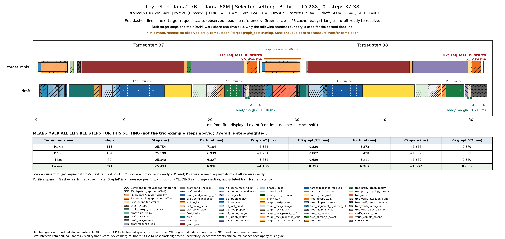
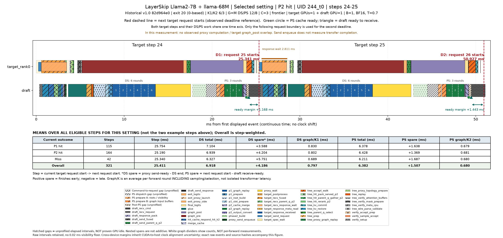
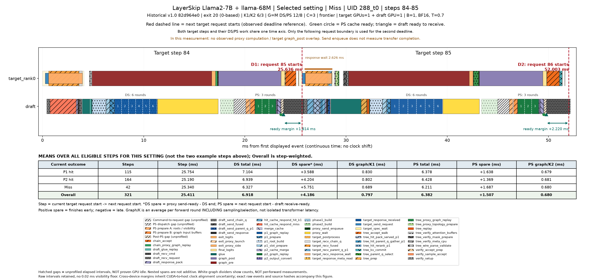
1.2 채택 소스와 동일 / RTX4090 / PS 최적화 A/B의 고정 설정. 최적 파라미터 결과가 아님.
Accepted optimization / RTX4090 / same 24 turns repeated 3 times; fixed parameters
| Current outcome | Steps | Step (ms) | DS total (ms) | DS spare* (ms) | DS graph/K1 (ms) | PS total (ms) | PS spare (ms) | PS graph/K2 (ms) |
|---|---|---|---|---|---|---|---|---|
| P1 hit | 813 | 19.875 | 7.715 | +1.529 | 1.137 | 4.914 | +1.482 | 0.953 |
| P2 hit | 1245 | 19.656 | 7.567 | +1.925 | 1.109 | 4.943 | +1.391 | 0.953 |
| Miss | 333 | 20.913 | 6.604 | +3.478 | 0.952 | 4.905 | +1.638 | 0.947 |
| Overall | 2391 | 19.905 | 7.483 | +2.007 | 1.097 | 4.928 | +1.456 | 0.952 |
Proxy 계산 ↔ target 후반 forward 중첩: 0/2391 step, 전체 step 평균 중첩 0.000ms. 전송 완료 시간은 미계측.
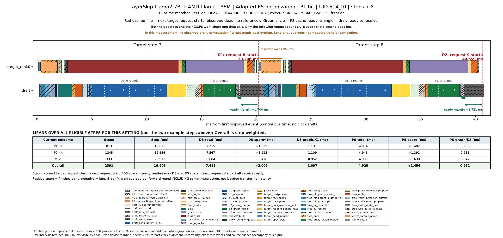
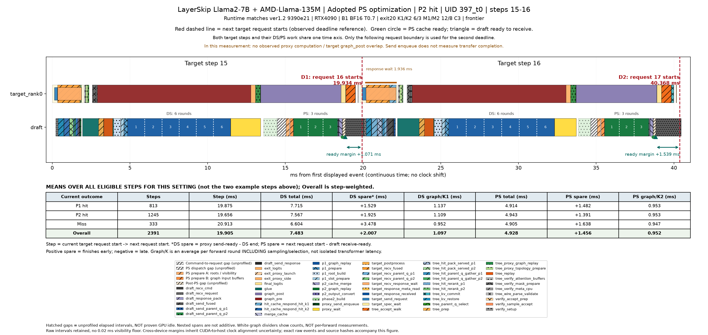
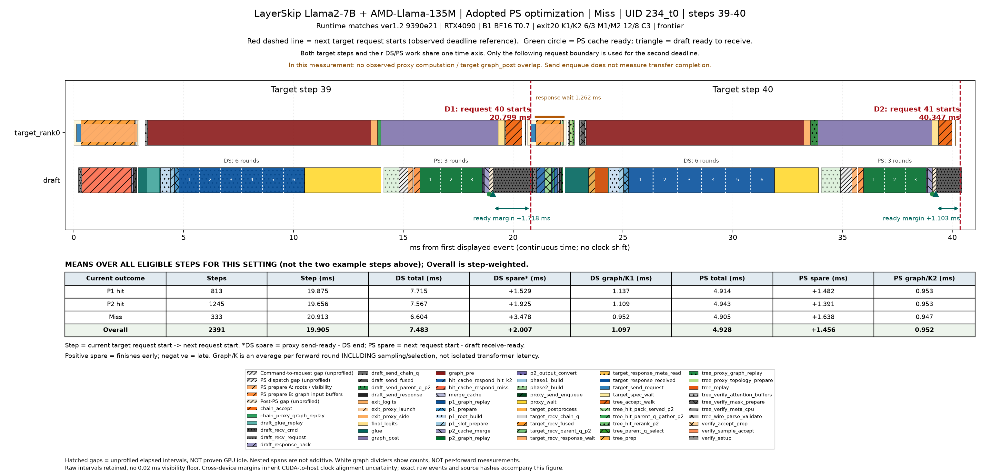
과거 ver1.0 계열 / RTX3090 / 설정별 profile 4턴. 1.2 신규 측정이 아님.
Historical v1.0 / RTX3090 / 4 profiled turns
| Current outcome | Steps | Step (ms) | DS total (ms) | DS spare* (ms) | DS graph/K1 (ms) | PS total (ms) | PS spare (ms) | PS graph/K2 (ms) |
|---|---|---|---|---|---|---|---|---|
| P1 hit | 139 | 35.969 | 12.058 | +2.389 | 1.584 | 9.352 | +1.839 | 1.208 |
| P2 hit | 225 | 33.365 | 11.974 | +1.955 | 1.593 | 9.390 | +1.083 | 1.208 |
| Miss | 80 | 31.946 | 9.634 | +4.198 | 1.211 | 9.095 | +0.991 | 1.209 |
| Overall | 444 | 33.924 | 11.579 | +2.495 | 1.521 | 9.325 | +1.303 | 1.208 |
Proxy 계산 ↔ target 후반 forward 중첩: 0/444 step, 전체 step 평균 중첩 0.000ms. 전송 완료 시간은 미계측.
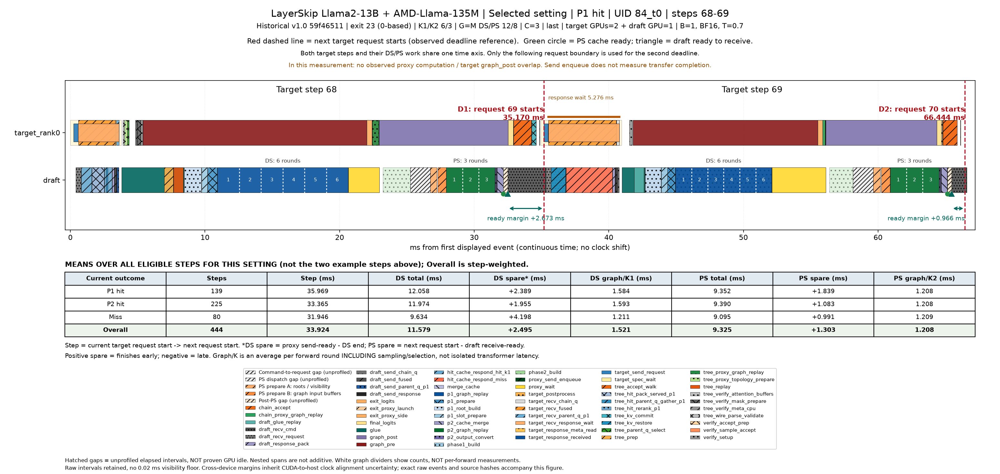
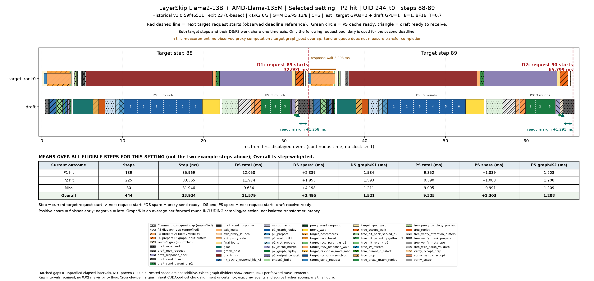
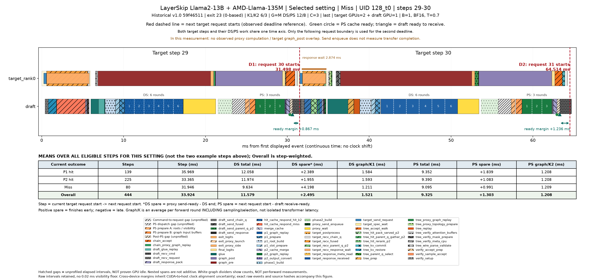
과거 ver1.0 계열 / RTX3090 / 설정별 profile 4턴. 1.2 신규 측정이 아님.
Historical v1.0 / RTX3090 / 4 profiled turns
| Current outcome | Steps | Step (ms) | DS total (ms) | DS spare* (ms) | DS graph/K1 (ms) | PS total (ms) | PS spare (ms) | PS graph/K2 (ms) |
|---|---|---|---|---|---|---|---|---|
| P1 hit | 65 | 29.234 | 11.203 | +1.503 | 2.419 | 6.237 | +3.108 | 2.121 |
| P2 hit | 295 | 28.194 | 10.179 | +2.677 | 2.168 | 6.257 | +2.942 | 2.122 |
| Miss | 27 | 28.077 | 9.295 | +3.628 | 1.954 | 6.069 | +3.197 | 2.126 |
| Overall | 387 | 28.360 | 10.289 | +2.546 | 2.195 | 6.240 | +2.987 | 2.122 |
Proxy 계산 ↔ target 후반 forward 중첩: 0/387 step, 전체 step 평균 중첩 0.000ms. 전송 완료 시간은 미계측.
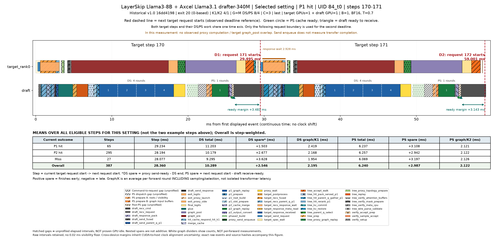
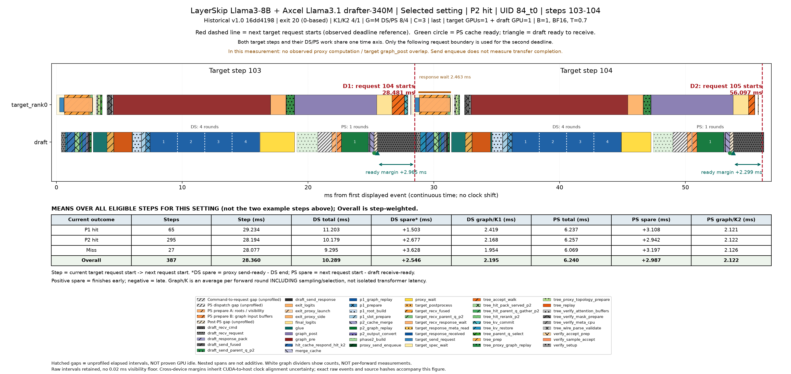
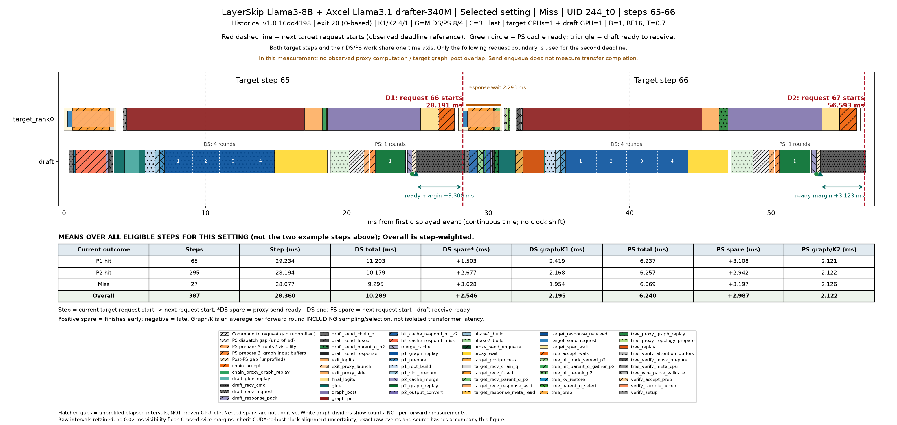
과거 ver1.0 계열 / RTX3090 / 설정별 profile 4턴. 1.2 신규 측정이 아님.
Historical v1.0 / RTX3090 / 4 profiled turns
| Current outcome | Steps | Step (ms) | DS total (ms) | DS spare* (ms) | DS graph/K1 (ms) | PS total (ms) | PS spare (ms) | PS graph/K2 (ms) |
|---|---|---|---|---|---|---|---|---|
| P1 hit | 62 | 65.234 | 22.848 | +14.976 | 1.747 | 11.967 | +7.769 | 1.226 |
| P2 hit | 11 | 55.328 | 22.743 | +8.651 | 1.743 | 11.867 | +5.450 | 1.226 |
| Miss | 0 | N/A | N/A | N/A | N/A | N/A | N/A | N/A |
| Overall | 73 | 63.741 | 22.832 | +14.023 | 1.746 | 11.952 | +7.420 | 1.226 |
Proxy 계산 ↔ target 후반 forward 중첩: 0/73 step, 전체 step 평균 중첩 0.000ms. 전송 완료 시간은 미계측.
Historical v1.0 / RTX3090 / 4 profiled turns
| Current outcome | Steps | Step (ms) | DS total (ms) | DS spare* (ms) | DS graph/K1 (ms) | PS total (ms) | PS spare (ms) | PS graph/K2 (ms) |
|---|---|---|---|---|---|---|---|---|
| P1 hit | 63 | 64.908 | 36.258 | -5.479 | 2.059 | 14.165 | -0.365 | 1.236 |
| P2 hit | 19 | 59.838 | 35.969 | -6.511 | 2.058 | 14.526 | -3.691 | 1.234 |
| Miss | 2 | 66.205 | 35.801 | -8.284 | 1.867 | 13.198 | -5.588 | 1.232 |
| Overall | 84 | 63.792 | 36.182 | -5.779 | 2.054 | 14.224 | -1.241 | 1.235 |
Proxy 계산 ↔ target 후반 forward 중첩: 0/84 step, 전체 step 평균 중첩 0.000ms. 전송 완료 시간은 미계측.
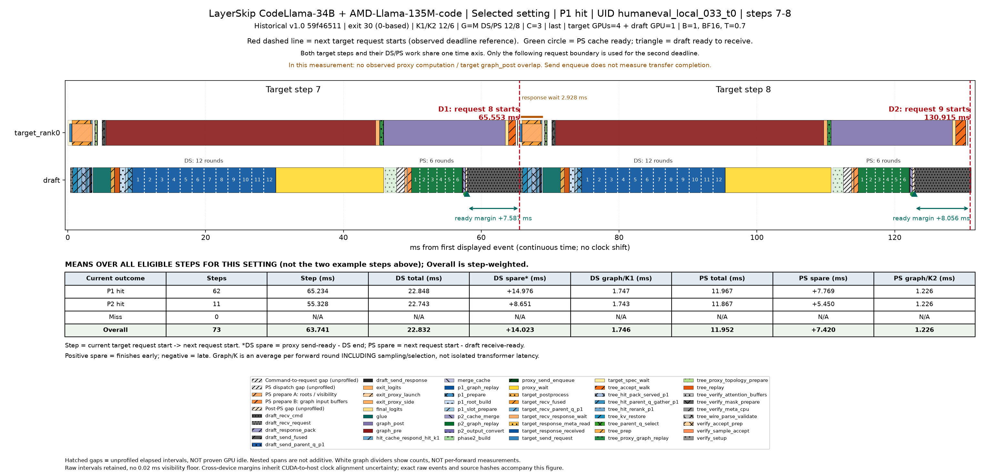
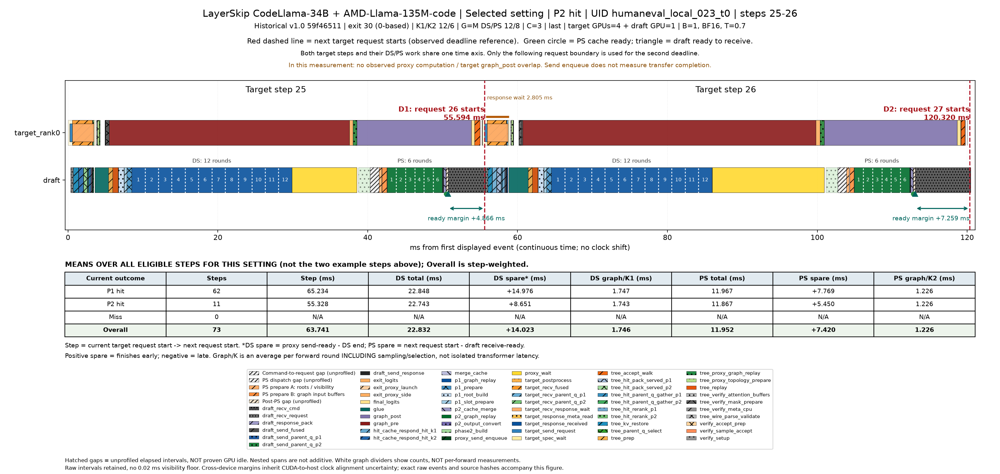
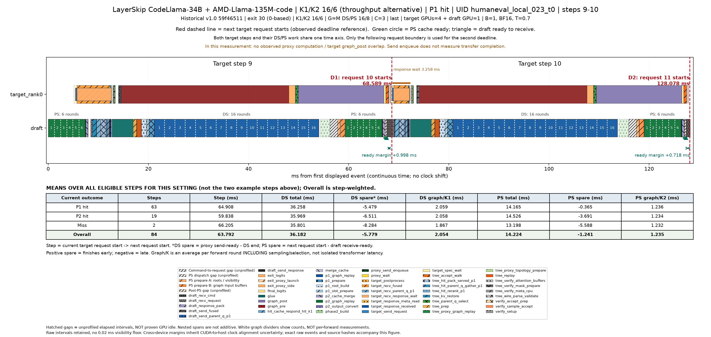
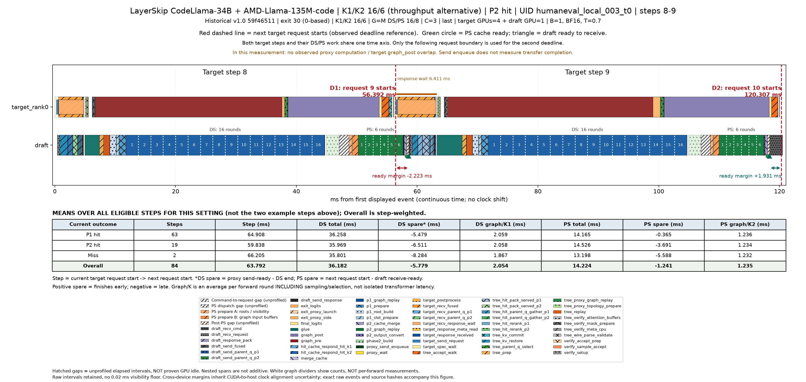
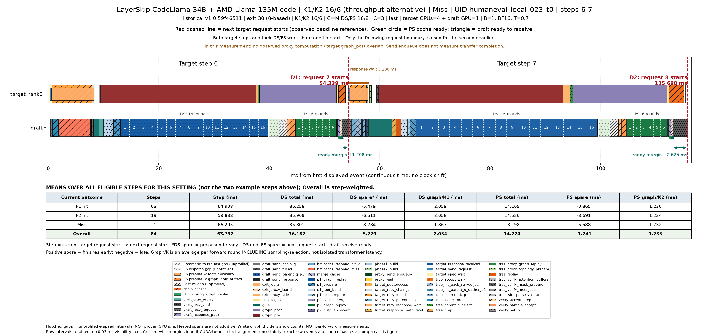